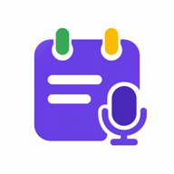

Voice AI Memo
声のカレンダー
話すだけで、メモと予定がたまっていく音声カレンダーです。話した内容から予定を見つけて、カレンダーへの登録までお手伝いします。
よくある質問
「標準」と「高精度」のちがいは
「標準」は、iPhoneの中だけで文字にします。録音が外に送られることはありません。「高精度」は、録音をAIに送ってより正確に文字にし、タイトルや予定の候補も整理します。設定の「文字起こし形式」で切り替えられます。
予定はどうやって登録されますか
「明日10時に歯医者」のように話すと、日付と時刻を読み取って予定の候補を出します。内容を確かめてから、アプリのカレンダーやiPhoneのカレンダーに登録できます。録音の最初か最後に「予定です」と話すと、登録の画面がすぐ開きます。「メモです」と話すと、普通のメモとして保存します。
お金はかかりますか
「標準」の文字起こしは無料です。「高精度」は、無料で月5分・10件まで試せます。プレミアム（月額480円、または年額4,800円）にすると、高精度を月60分・120件まで使えます。プレミアムは自動で更新されます。止めるのは、iPhoneの「設定」→ 自分の名前 →「サブスクリプション」から、いつでもできます。
iPhoneを買い替えたら、もう一度払う必要がありますか
いいえ。同じApple IDなら、設定の「プレミアム」で「購入を復元」を押すと、そのまま使えます。
「高精度の文字起こしを開始できませんでした」と出ました
録音はiPhoneに残っています。電波の良いところで「この録音を高精度で送信」を押してください。続く場合は、表示された確認コードを添えて、下のメールアドレスへお知らせください。
メモや録音はどこに保存されますか
iPhoneの中に保存します。高精度を使ったときの結果と利用量は、匿名の利用者IDに結びつけてサーバーにも記録します。くわしくはプライバシーポリシーをご覧ください。
お問い合わせ
ご質問やご意見は、こちらへメールでお送りください。録音やメモの本文、パスワードは書かないでください。